PROJECT
PROJECT 01
Resume Website - Etika Profesi
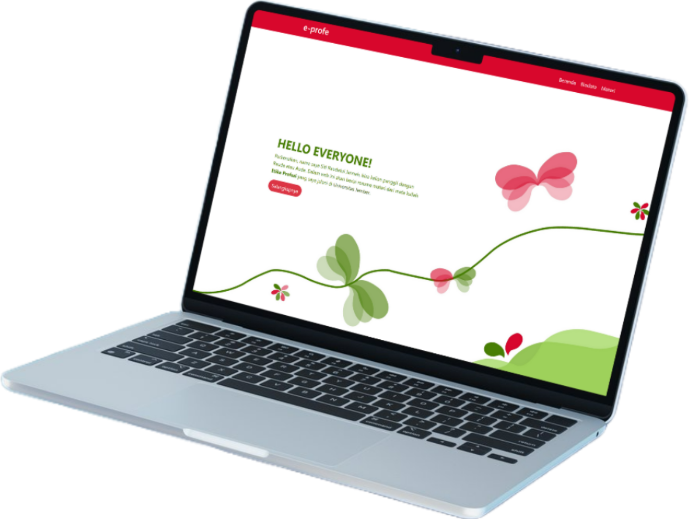
PROJECT 02
UI Design
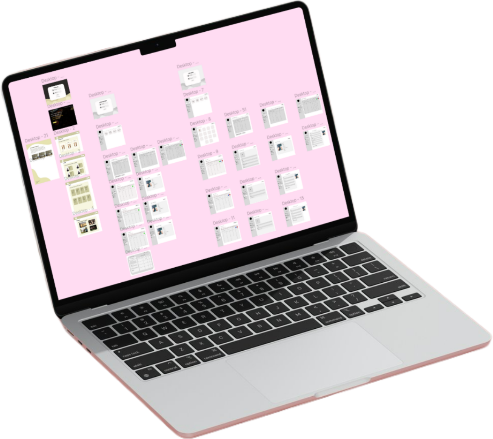 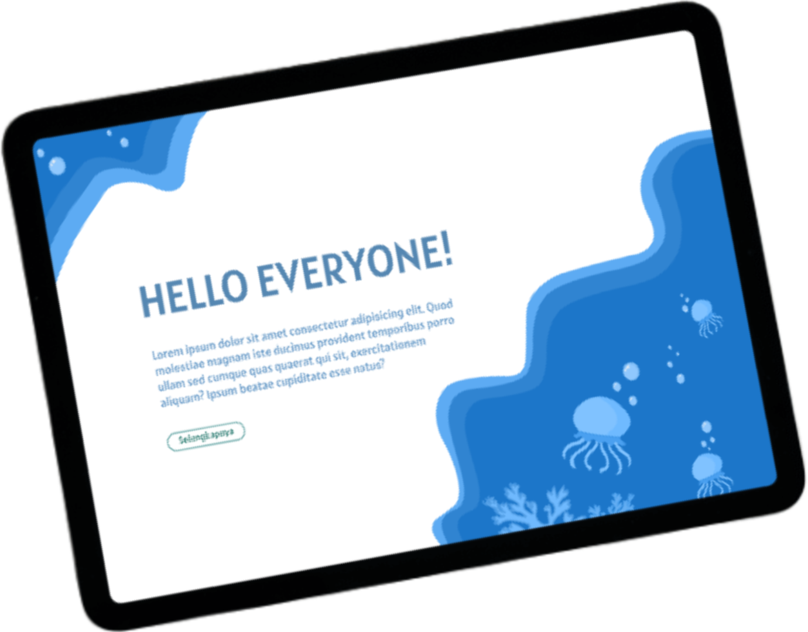PROJECT 03
Illustration Design - Turtle
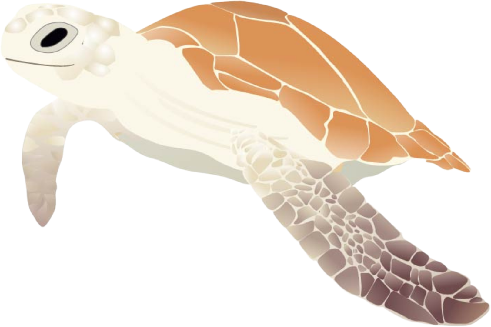
PROJECT 04
Logo Competition
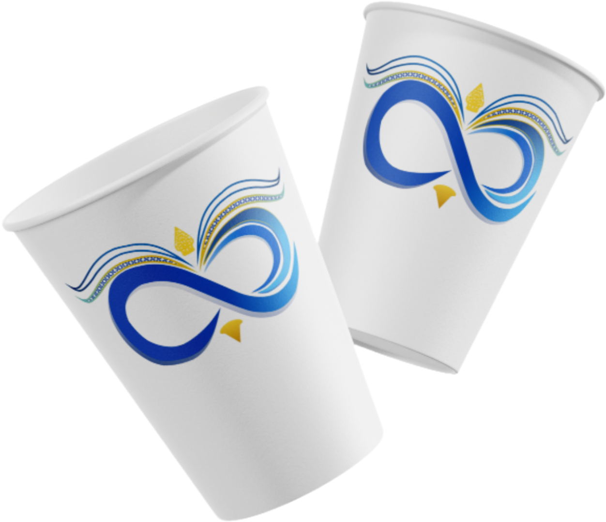 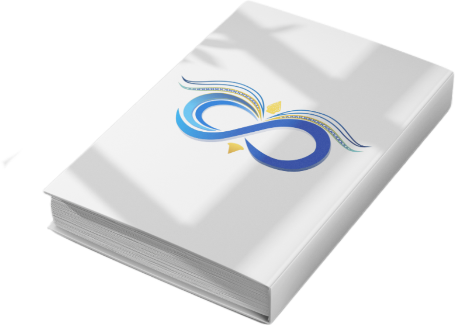Created By : Siti Raudatul Jannah
Hi! I'm Siti Raudatul Jannah, often called Rauda
I was born in Bondowoso and currently living in Sumbersari, Jember. With a background in Software Engineering, I'm now exploring the world of Informatics. Beyond coding, I'm deeply drawn to graphic design, where I bring ideas to life using Adobe Illustrator and Figma. Lately, I've been diving into ocean-inspired themes, blending creativity with calm, flowing visuals. Design, to me, is a space to grow, express, and collaborate.
Informatics
Currently studying Informatics, where I explore topics such as software development, web technologies, data analysis, and computer systems. This path allows me to strengthen my technical skills while supporting my creative interests in digital design
Software Engineering
Graduated from a vocational high school with a focus on software engineering. I gained hands-on experience in programming, debugging, and building applications, as well as developing problem-solving and teamwork abilities.
Resume Website - Etika Profesi
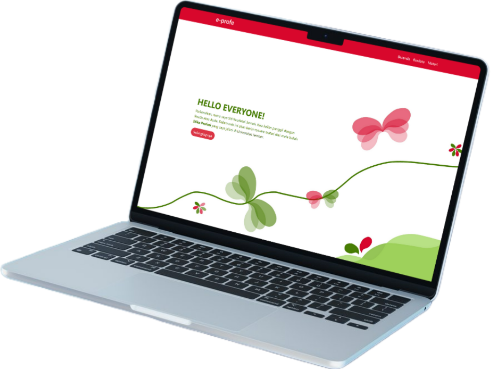
UI Design
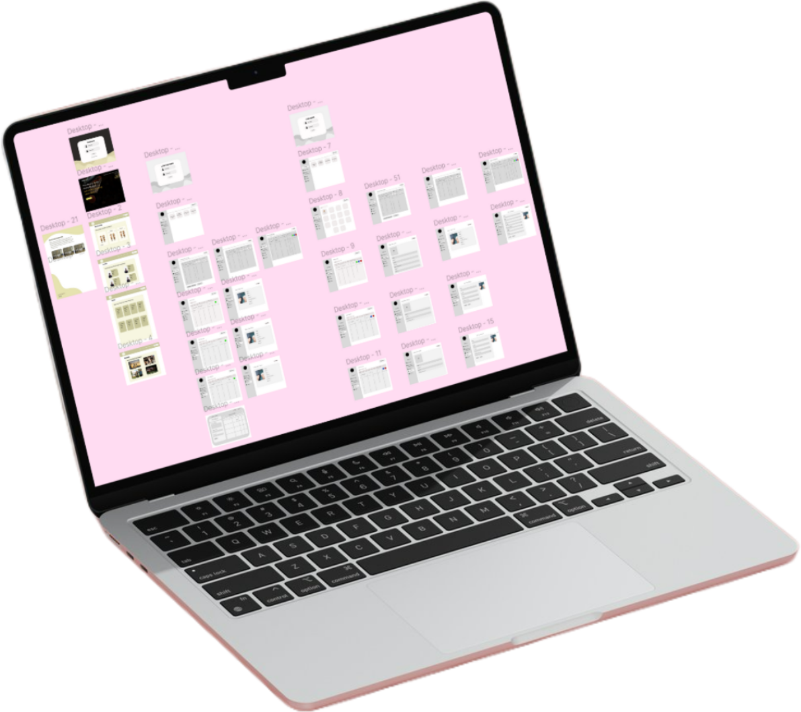 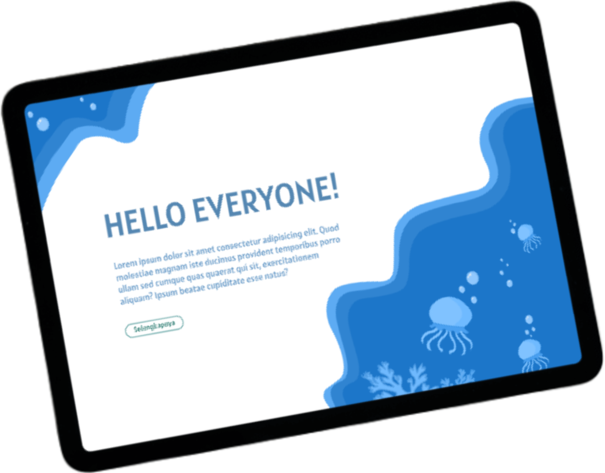Illustration Design - Turtle
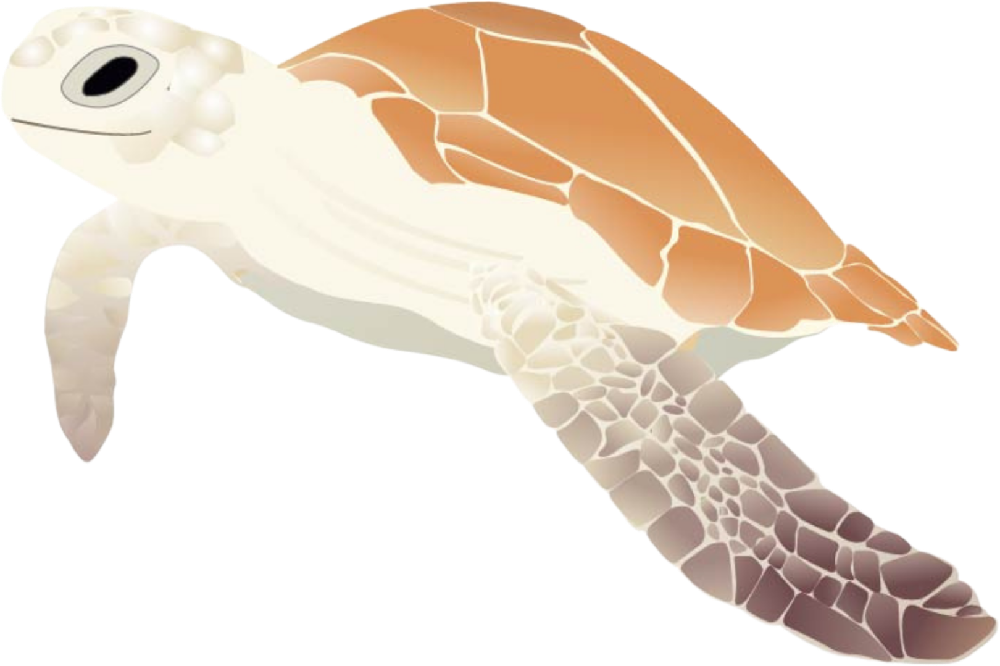
Logo Competition
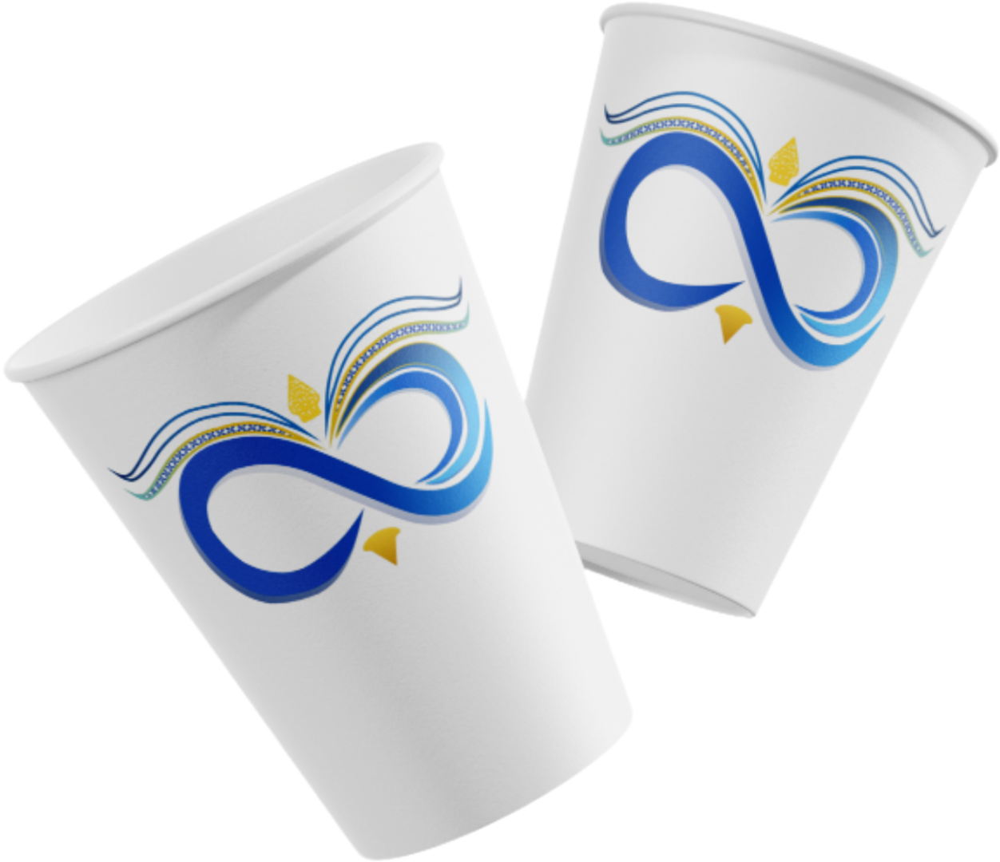 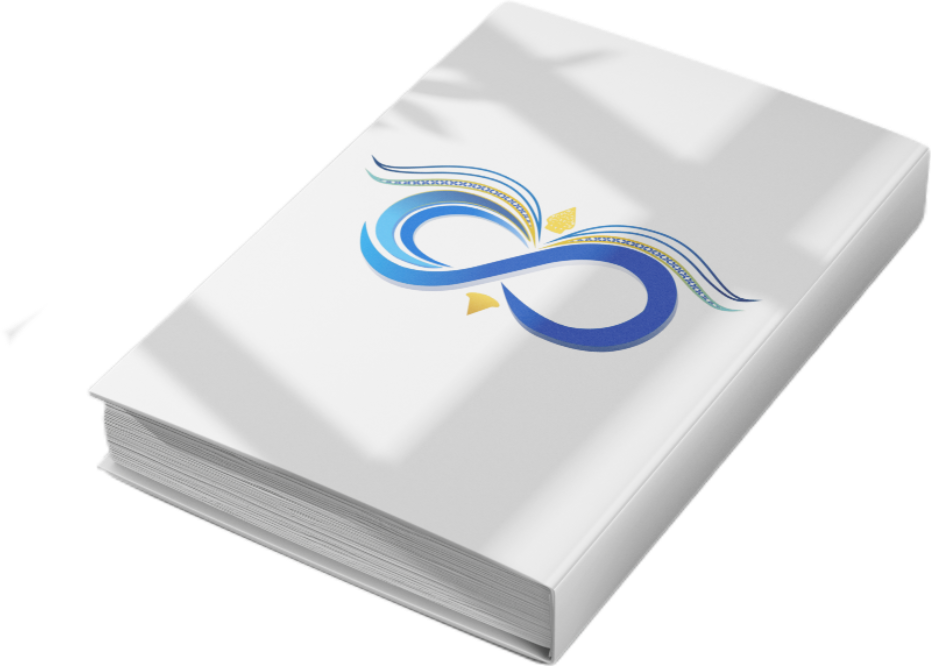